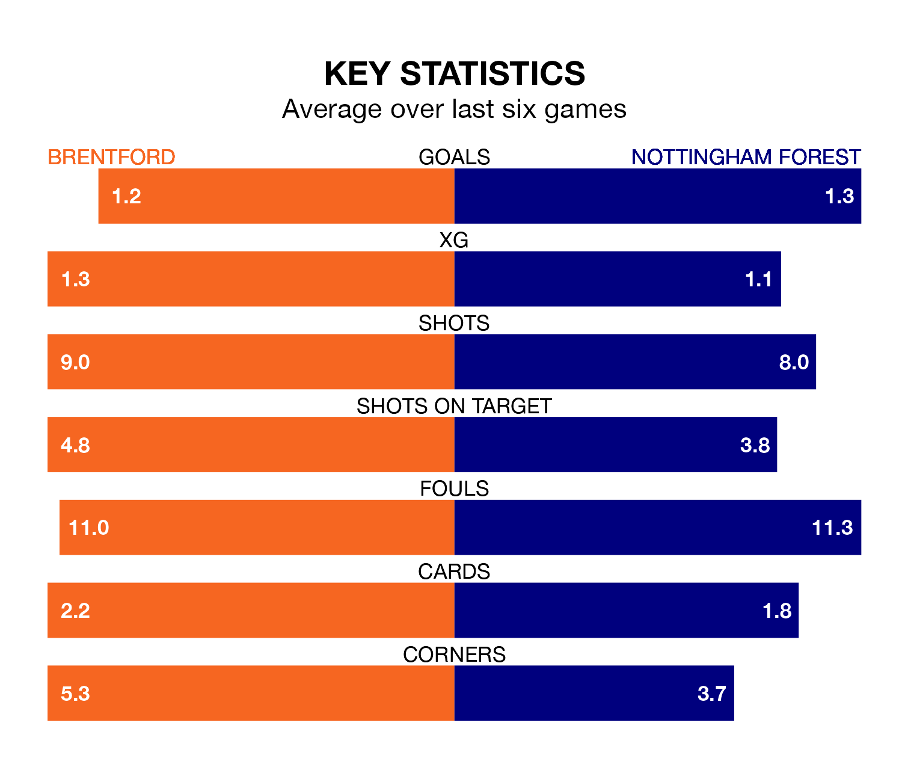

Brentford welcome Nottingham Forest to the Gtech Community Stadium on late Saturday looking to pick up points to end their five-game losing streak.
Brentford's struggles have left them with just three points from their last six Premier League matches, while their opponents have earned seven from a possible 18.
Brentford are 17th in the table after 19 games, of which they have won five and drawn four, earning 19 points.
Forest are one place ahead of the Bees in 16th, with five wins and five draws putting them on 20 points.
With 24 goals in 20 games so far this season, the Tricky Trees are scoring at below the league average rate with 1.2 goals per game. And they are conceding more than average, letting in 35 goals at a rate of 1.8 per game.
The home team are also below average scorers, with 1.4 goals per game, compared to a league average of 1.6. They have conceded 1.6 goals per game.
In the last five years, Brentford and Forest have played each other on eight occasions. Brentford won two of them, Forest three, and they drew three times.
On average, the Bees scored 1.2 goals and the Tricky Trees 1.2 in those matches.
Their last meeting was on October 1, when they played out a 1-1 draw.
Brentford's last match was on December 30, a 3-1 loss against Crystal Palace, with Keane Lewis-Potter getting the goal for the Bees.
Forest beat Manchester United 2-1 last time out, also on December 30, with Morgan Gibbs-White and Nicolás Domínguez on the scoresheet.
Updated: 11:29, 08/01/24